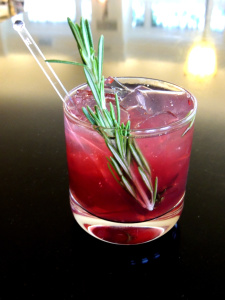

Gin
Tom Collins
Ingredients
- 1 Parts Bombay Sapphire Gin (also try with Vodka, Whiskey or Tequila!)
- Juice of half a lemon
- 2 Parts Soda Water
- 2 tsp Caster Sugar
- Lemon Wedge (garnish)
- Ice
Method
- Add the freshly squeezed lemon juice, sugar and Bombay Sapphire to a clean highball glass and stir.
- Add plenty of cubed ice and stir again.
- Top with soda water and stir for a final time
- Garnish with the lemon wedge then serve and enjoy!
Negroni

Ingredients
- 25ml Gin
- 25ml Campari
- 25ml Sweet Vermouth
- Ice
Method
- In a mixing glass, give all three ingredients a few quick turns over very cold ice until blended.
- Strain into a rocks glass over a large ice block.
- Garnish with an orange twist or slice.
Where to get one
Negronis are the new big thing - so unsurprisingly there are hundreds of bars in London with A* Negronis. Check out TimeOut's list of the top 11 and try for yourself!
Gimlet

Ingredients
- 50ml gin
- 50ml lime cordial or homemade lime syrup
- Soda water (optional)
- Ice
- Slice of lime
Method
- Put a martini or coupe glass in the fridge to chill.
- Pour 50ml of lime syrup or cordial into a jug or tall glass, add a few ice cubes and the gin.
- Stir, until the outside of the container feels very cold.
- Strain the mixture into your chilled glass and garnish with a slice of lime.
- Top up with soda water to taste - you don't have to add any!
Where to get one
Try the Mint Gun Club in Stoke Newington.
Singapore Sling

Ingredients
- 25ml dry gin
- 25ml cherry brandy
- 25ml Benedictine
- A few drops of Angostura bitters
- 50ml pineapple juice
- 25ml lime juice
- Sparkling water to top up
- Cocktail cherry
- 1 thin slice of fresh pineapple (optional garnish)
- Ice
Method
- Pour the gin, cherry brandy and Benedictine into a mixing glass or a jug.
- Add the ice and Angostura bitters.
- Stir well until the outside of the glass feels cold.
- Pour the mix into a tall glass, then add the pineapple juice and lime juice and stir gently.
- Top up with sparkling water and garnish.
French 75
Ingredients
- 50ml Gin
- 1 tbsp lemon juice
- 1 tsp sugar syrup
- Champagne (or any other sparkling wine)
- Ice
- Lemon Peel (garnish)
Method
- Pour the lemon juice, sugar syrup and gin into a cocktail shaker then fill up with ice.
- Shake well then strain into a champagne flute.
- Top with a little bubbly, leave to settle (as it will bubble up) then fill up with more!
- Swirl gently with a cocktail stirrer then garnish with a twist of lemon peel.
Where to get one
For a fruity-twist on the classic, try the Three Sheets Bar in Dalston.
Gin Fizz
Ingredients
- 50ml Bombay Sapphire Gin
- 15ml Lemon juice
- 2 Dashes orange blossom water
- 10ml Sugar syrup
- 60m Cream
- 1 Egg white
- Soda water
- Ice cubes
Method
- You can either buy pre-mixed sugar syrup or if you want to make your own.
- Put all of the ingredients into a shaker without ice and shake hard to help the egg white turn to foam.
- Put ice into the shaker and shake hard for another 20 seconds to chill the liquid.
- Strain the mix into a glass filled with ice and top up your glass with soda water.
Where to get one
Try one of Time Out’s 15 Best Gin Bars in London!
Concord Crush
Ingredients
- 25ml Gin
- 50ml Unsweetened red grape juice
- OR
- 50ml grape puree: 225g fresh red grapes, ½ tsp. fresh lime juice
- 25ml elderflower liqueur
- Juice from ½ a lime
- 15ml Sugar syrup
- Sprig rosemary (half for garnish)
- Soda
- Ice
Method
For the grape puree:
- Blend both ingredients in a blender or food processor.
- Pass through a fine mesh sieve, discarding the skins and seeds.
- Grape puree can be stored for several days in the fridge, or frozen for future use.
For the cocktail:
- Add the gin and rosemary sprig to a cocktail shaker, and muddle gently to release some of the rosemary oils.
- Add all the remaining ingredients and a handful of ice, and shake vigorously for 5-10 seconds.
- Strain into a glass over ice and top off with club soda.
- Garnish with a sprig of rosemary.
Earl Grey Martini

Ingredients
- 50ml Gin
- 35ml Cold, strongly-brewed Earl Grey tea
- 20ml Lemon juice
- 10ml Sugar syrup
- ½ Egg white
- Twist lemon peel (garnish)
- Ice <
- Try with:
- Honey instead of Sugar Syrup & garnish with Lavender for a more fragrant twist!
Method
- To make the Earl Grey tea, brew in water just below boiling point for 3 minutes, then leave to cool.
- Place the ice, gin, cooled Earl Grey tea, lemon juice, sugar syrup and egg white into a cocktail shaker and shake well.
- Strain the liquid into a Martini glass and garnish with a twist of lemon peel.
Alabama Slammer

Ingredients
- 25ml Southern Comfort
- 25ml Amaretto
- 25ml Sloe Gin
- 50ml Orange Juice
- Orange Peel (garnish)
- Glacier Cherry (garnish)
- Ice
Method
- Fill a cocktail shaker halfway with ice cubes.
- Pour in all the ingredients and shake well.
- Fill a highball glass with ice.
- Strain the mixture into it.
- Garnish with a cherry and an orange wheel.
Aviation
Ingredients
- 50ml Gin
- 25ml Maraschino liqueur
- 25ml Fresh lemon juice
- 10ml Creme de Violette
- Maraschino cherry (garnish)
- Ice
Method
- Cool a martini glass with ice.
- Add all the ingredients (except garnish) into a cocktail shaker and shake thoroughly for 10 seconds.
- Strain into the martini glass and serve with the maraschino cherry.